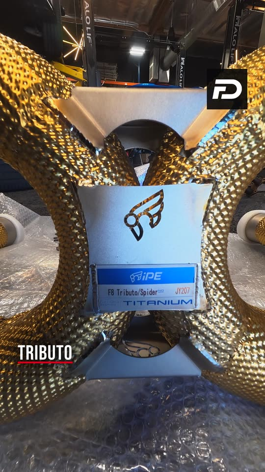

Formula Dynamics · Job 06 of 12Unlocking the MC20
MC20 ECU work, then the F8 Spider's taillights and OPF out, its factory exhaust off, and the iPE titanium on the floor.
Watch the full episode
Formula Dynamics · Job 06 of 12MC20 ECU work, then the F8 Spider's taillights and OPF out, its factory exhaust off, and the iPE titanium on the floor.
Watch the full episode